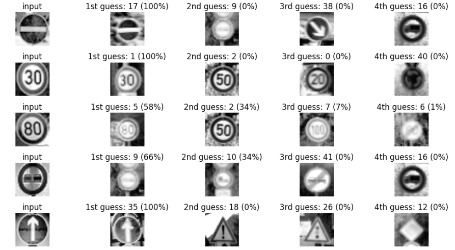

I am a Research Associate at the Technical University of Munich, working on research and development of optimal control algorithms for networked systems. I am an experienced researcher and a quick learner, passionate about autonomous driving, and enjoy applying optimal control and reinforcement learning techniques to solve the challenges in networked systems.
Research Interests: Localization, Autonomous Driving, Reinforcement Learning
Hobbies: videogames, dancing, cooking
Recent Projects
Programming a Real Self-Driving Car
Implemented ROS node Traffic Light Detection using a Single-Shot Detection with MobileNet as base network. Trained the network with real images and simulated images for easy deployment to Carla. Implemented ROS node Drive-By-Wire to control throttle, brake and steering autonomously. Implemented Trajectory Generation node in order to update the target velocity property of each way-point based on traffic light and obstacle detection data.
Path Planner (C++)
Drove a car down a highway with other cars (simulation) using my own path planner. Used data from sensor fusion to generate predictions about the likely behavior of moving objects. Used C++ and the Eigen linear algebra library to build candidate trajectories for the vehicle to follow.
Vehicle Localization with a Particle Filter (C++)
Vechile is transported to an unkonw place, then a real-time particle filter is used for estimating the vechicle's position and orientation with given a map, an initial noisy GPS, and each timestep's noisy observation data.
Driving behavioral cloning (Python)
Built and trained a CNN to autonomously steer a car in a game simulator, using TensorFlow and Keras. Used optimization techniques such as regularization and dropout to generalize the network for driving on unseen tracks.
 Object tracking with Sensor Fusion-based Extended Kalman Filter (C++)
Object tracking with Sensor Fusion-based Extended Kalman Filter (C++)
Utilize sensor data from both LIDAR and RADAR measurements for object (e.g. pedestrian, vehicles, or other moving objects) tracking with the Extended Kalman Filter.
 Find Lane Lines on the road (Python)
Find Lane Lines on the road (Python)
Detected highway lane lines on a video stream. Used OpencV image analysis techniques to identify lines, including Hough Transforms and Canny edge detection.

Traffic Sign Recognition (Python)
Built and trained a deep neural network to classify traffic signs, using TensorFlow. Experimented with different network architectures. Performed image pre-processing and validation to guard against overfitting.
Autonomous driving with PID controller (C++)
This project is to use PID controllers to control the steering angle and the throttle for driving a car in a game simulator. The simulator provides cross-track error (CTE) via websocket. The PID (proportional-integral-differential) controllers give steering and throttle commands to drive the car reliably around the simulator track.

{kind=link}
{kind=link}
{kind=link}
{kind=link}
 Object tracking with Sensor Fusion-based Extended Kalman Filter (C++)
Object tracking with Sensor Fusion-based Extended Kalman Filter (C++)
 Find Lane Lines on the road (Python)
Find Lane Lines on the road (Python)
{kind=link}
{kind=link}